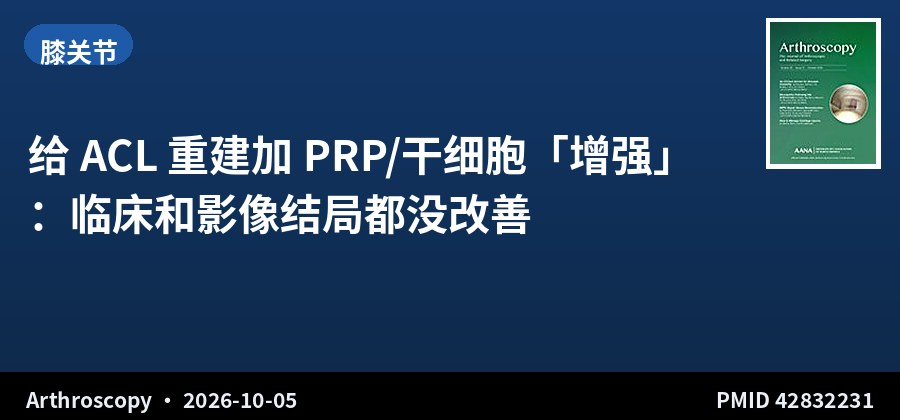

SPORTS MEDICINE & ARTHROSCOPY DIGEST
给 ACL 重建打 PRP/干细胞，真能帮上忙？9 个 RCT 说：不能
第 020 期 · 2026-10-08
10月4–7日 10 本核心期刊新收录 39 篇 → 精选 15 篇（剔除编辑评论/来信）
最近四天（10/4–10/7）攒了 39 篇，剔除编辑评论和来信后，我筛出 15 篇值得看的。先看最反常识的一条：给 ACL 重建加 PRP、干细胞这些「正生物学增强」，9 个随机试验的 Meta 说——其实没用。
▍今日主打 · TODAY’S FOCUS

系统综述+Meta · I级证据 · 9项RCT · 543例 Systematic Review + Meta · Level I · 9 RCTs · 543 pts
给 ACL 重建加 PRP/干细胞「增强」：临床和影像结局都没改善
Orthobiologic Augmentation for Anterior Cruciate Ligament Reconstruction Is Not Associated With Improved Clinical or Radiographic Outcomes
Arthroscopy · 2026-10-05 · 系统综述+Meta · PMID 42832231
一句话结论：9 项 RCT、543 例患者的系统综述与 Meta 分析，评估正生物学增强（PRP、骨髓穿刺浓缩物、间充质干细胞）对 ACLR 结局的影响。结果显示：正生物学增强与 ACLR 临床结局或移植物成熟度（影像）的改善均无显著相关。
要点：检索 PubMed、EMBASE、Web of Science，纳入比较 ACLR ± 正生物学的 RCT，排除仅用于供区者。对同一种正生物学生物学且 ≥3 项研究的结局用随机效应模型做 Meta 分析（SMD）。
对临床的启示：PRP、BMAC、干细胞给 ACL 重建「加点料」在临床上很流行，但这篇 I 级证据的 Meta 给了一个清醒的结论：无论临床评分还是移植物成熟度，增强组与对照组都没差别——与「局部微环境本已足够、外源因子边际效用有限」的生物学逻辑一致。临床意义：不必为 ACLR 常规加用正生物学增强，患者也不该为此额外付费。局限是仅 9 项 RCT、存在异质性，且不同生物制剂与剂量方案混杂。
Conclusion: A systematic review and meta-analysis of 9 RCTs (543 patients) evaluated orthobiologic augmentation (PRP, bone marrow aspirate concentrate, mesenchymal stem cells) for ACLR. Orthobiologics were not significantly associated with improved clinical outcomes or radiographic graft maturation.
Key points: PubMed/EMBASE/Web of Science search for RCTs comparing ACLR with vs without orthobiologics (applied to the graft, not the donor site). Meta-analysis (random-effects, SMD) for outcomes with ≥3 studies using the same biologic.
Clinical implications: PRP/BMAC/stem-cell 'boosters' for ACLR are popular, but this Level-I meta-analysis delivers a sobering verdict: no difference in clinical scores or graft maturation between augmented and control groups—consistent with the biology that the local milieu is already sufficient. Practical takeaway: do not routinely add orthobiologics to ACLR, and patients should not pay extra for it. Limitations: only 9 RCTs, heterogeneity, and mixed biologic/dose regimens.
原文 / Source：doi.org/10.1002/arj.70638
▍其余 14 篇 · 一屏看完
踝足
精英运动员舟骨骨折：8.2 周重返是算错了，实际约 19.7 周
Navicular Fractures in Elite Athletes: Clarifying the Evidence Base of the 2025 Consensus
指出 2025 足踝共识的系统综述把 RTS 时间单位算错——8.2 周实为约 19.7 周（4.5 个月），与专家共识的 4–6 个月一致。
Flags a unit-conversion error in the 2025 consensus: reported 8.2-week RTS is actually ~19.7 weeks (4.5 months), matching the 4–6-month expert recommendation.
Knee Surg Sports Traumatol Arthrosc · PMID 42828435 · doi.org/10.1002/ksa.70632
膝关节
内侧胫骨后倾增大，与髌股软骨损伤相关
Increased Medial Posterior Tibial Slope Is Associated With Patellofemoral Cartilage Lesions
280 例 1:1 匹配病例对照，内侧胫骨后倾增大与髌股关节（滑车/髌后）软骨损伤相关。
In 280 matched-pair cases, greater medial posterior tibial slope was associated with patellofemoral (trochlear/retropatellar) cartilage lesions.
J ISAKOS · PMID 42829203 · doi.org/10.1016/j.jisako.2026.101228
膝关节
ACLR 与心理健康：双向关系
Anterior Cruciate Ligament Reconstruction and Mental Health: A Bidirectional Relationship
术前有心理疾病者 ACLR 后结局更差，非运动损伤者新发心理诊断更多。
Pre-existing mental-health diagnoses predicted poorer ACLR outcomes; non-sport injuries were linked to more new mental-health diagnoses.
Sports Health · PMID 42830691 · doi.org/10.1177/19417381261486640
膝关节
ACLR 的 MCID/PASS 阈值：各研究差异巨大
MCID and PASS Thresholds After ACLR Vary Considerably Across Studies
9 项研究汇总，IKDC 的 MCID 9.0–10.4、PASS 74.2–86.8，KOOS 亚域 MCID 2.5–21.9，阈值差异大。
Across 9 studies, IKDC MCID ranged 9.0–10.4 and PASS 74.2–86.8; KOOS subdomain MCID spanned 2.5–21.9—thresholds vary widely.
Arthroscopy · PMID 42834687 · doi.org/10.1002/arj.70512
膝关节
术前内翻 ≥10° 不影响内侧 UKA 结局
Preoperative Varus ≥10° Does Not Compromise Outcome After Medial UKA
132 对匹配、10.1 年随访，术前内翻 ≥10° 不损害 UKA 结局；术后关节线汇聚角与垫片厚度影响功能。
In 132 matched pairs (10.1-y follow-up), preoperative varus ≥10° did not compromise UKA outcomes; postoperative JLCA and insert thickness mattered.
Knee Surg Sports Traumatol Arthrosc · PMID 42841791 · doi.org/10.1002/ksa.70636
膝关节
双束 MPFL 重建：游离股直肌腱技术
Double-Bundle MPFL Reconstruction Using Free Rectus Femoris Tendon
用游离股直肌腱做双束 MPFL 重建的技术说明，提供可复制的取材与固定方案。
Technical note on double-bundle MPFL reconstruction using a free rectus femoris tendon graft.
Arthrosc Tech · PMID 42831219 · doi.org/10.1002/atn2.70295
肩关节
网球肘 PRP：富白 vs 贫白，12 个月力量无差异
Leukocyte-Rich vs Leukocyte-Poor PRP for Lateral Epicondylitis: An RCT
71 例 RCT，富白与贫白 PRP、盐水注射 12 个月腕伸肌力均有改善，组间无显著差异。
In a 71-patient RCT, LP-PRP, LR-PRP and saline all improved wrist-extensor strength at 12 months with no between-group differences.
J Shoulder Elbow Surg · PMID 42829102 · doi.org/10.1016/j.jse.2026.09.009
肩关节
盂唇修复 + Remplissage 后外旋缺失：影响有意义结局吗？
Does External Rotation Deficit After Labral Repair With Remplissage Affect Meaningful Outcomes?
外旋缺失虽被标为「缺陷」，但可能不影响 MCID/SCB/PASS 达成——传统评分可能低估了这一点。
ER loss after remplissage may not impair MCID/SCB/PASS achievement—traditional scores may underweight this.
J Shoulder Elbow Surg · PMID 42843506 · doi.org/10.1016/j.jse.2026.09.021
肩关节
锁骨远端自体骨块做前向稳定：41 例系列
Arthroscopic Anterior Bone-Block Stabilisation Using Distal Clavicle Autograft
41 例用锁骨远端自体骨块的关节镜骨块稳定，作为 Latarjet 的免喙突替代方案。
In 41 patients, arthroscopic bone-block stabilization using distal clavicle autograft offers a coracoid-sparing alternative to Latarjet.
J Shoulder Elbow Surg · PMID 42843505 · doi.org/10.1016/j.jse.2026.09.024
肩关节
术前营养不良（GNRI<98）升高 rTSA 假体周围感染风险
Preoperative Malnutrition and Risk of PJI After Reverse Total Shoulder Arthroplasty
157 例 rTSA，GNRI<98（营养不良）是假体周围感染的独立危险因素。
In 157 rTSAs, GNRI<98 (malnutrition) was an independent predictor of periprosthetic joint infection.
J Shoulder Elbow Surg · PMID 42843504 · doi.org/10.1016/j.jse.2026.09.018
肩关节
Essex-Lopresti 损伤：急性 vs 慢性的处理与结局
Acute Versus Chronic Essex-Lopresti Injuries: A Systematic Review
11 项研究 163 例，急性（<4 周）与慢性（>4 周）Essex-Lopresti 损伤的术式与结局模式不同。
Across 11 studies (163 patients), acute (<4 wks) and chronic (>4 wks) Essex-Lopresti injuries differed in management and outcomes.
J Shoulder Elbow Surg · PMID 42843503 · doi.org/10.1016/j.jse.2026.09.022
运动防护
社区橄榄球脑震荡：6 赛季男女差异
Sport-Related Concussion Characteristics Among Male and Female Community Rugby Players
456 例脑震荡，93.9% 在比赛日、多在下半场，男性多因扑搂、女性机制更分散。
Of 456 concussions, 93.9% occurred on match days (mostly second half); males via tackling, females more evenly distributed.
Sports Health · PMID 42842640 · doi.org/10.1177/19417381261474860
运动防护
接触运动反复头部撞击：神经损伤生物标志物升高
Repetitive Head Impacts During Contact Sports and Fluid Biomarkers of Neural Damage
33 项研究 892 人的 Meta，单次接触运动后 24 小时内神经损伤流体生物标志物显著升高。
A meta-analysis of 33 studies (892 participants) found fluid neural-damage biomarkers rose within 24 h after a single contact-sport session.
Sports Med · PMID 42839221 · doi.org/10.1007/s40279-026-02529-x
膝关节
ACLR 后着陆任务肌肉激活仍持续改变
Persistent Alterations in Muscle Activation During Landing Tasks After ACLR
ACLR 后着陆任务中肌肉激活模式持续改变，提示重返运动前需关注神经肌肉再训练。
Landing-task muscle activation remained altered after ACLR, underscoring neuromuscular retraining before return to sport.
Knee Surg Sports Traumatol Arthrosc · PMID 42837112 · doi.org/10.1002/ksa.70629
💬 一起聊聊：你给 ACL 重建常规加 PRP 或干细胞吗？看完这篇还会加吗？评论区聊聊。
关于本栏目：每日定时检索 10 本运动医学核心期刊前一日新收录文献，每日聚焦 1 篇值得深读的 + 其余精简速览，AI 辅助生成中英双语精要。
声明：本内容由 AI 辅助整理，仅供学术交流参考，观点与数据请以原文为准，不构成诊疗建议。文献题录与摘要来源：PubMed。
— 运动医学 · 关节镜文献速览 · 第 020 期 —